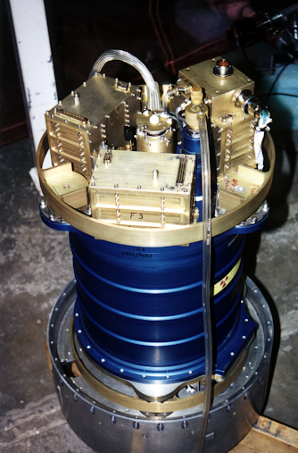
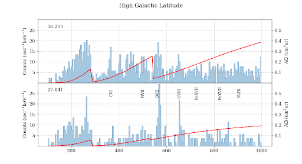
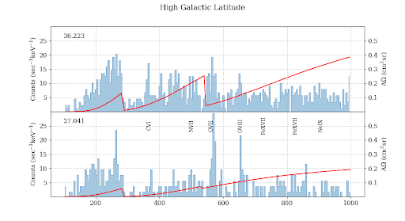
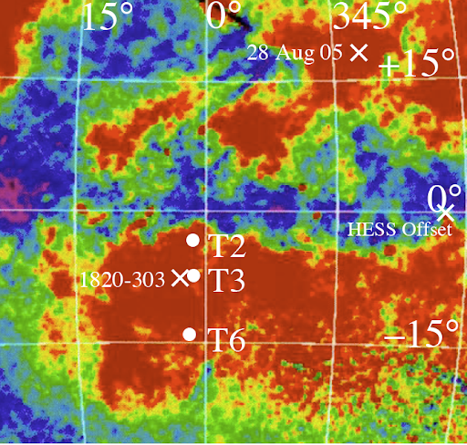
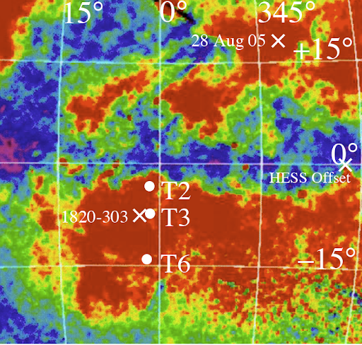

X-ray Astrophysics Group
Research
People
Publications
High Resolution X-ray Detectors
Cornerstone for detecting Low Energy X-rays
XQC
The X-ray Quantum Calorimeter (XQC) project is a joint effort between the University of
Wisconsin and Goddard Space Flight Center to resolve the spectrum of the soft (<1 keV) X-ray
background using an array of micro-calorimeters. These micro-calorimeters, which operate at a
temperature of 50 mK, provide an energy resolution of less than 10 eV at 1/4 keV. The XQC
detector has been successfully launched seven times in a sounding rocket, six of which have been
from the White Sands
Missile Range in New Mexico, and the most recent launch was conducted from Arnhem Space Center,
Nhulunbuy,
Northern Territory, Australia in the summer of 2022.
Introduction to X-ray Quantum Calorimeter
XQC stands for X-ray Quantum Calorimeter, a soft X-ray spectrometer used for suborbital
astrophysical observations. The XQC sounding rocket payload is designed to study the diffuse
X-ray background in the energy range from 0.05 to 1 keV at very high spectral resolution. The
diffuse X-ray background is thought to emanate from a local region of hot interstellar gas.
Previous experiments have implied that this gas is a hot, low density plasma but did not have
the resolving power to distinguish individual emission lines over a broad spectral range. This
experiment is able to resolve line emission from the hot plasma.


XQC Characteristics
- 36 pixel microcalorimeter array
- ~6 eV baseline resolution
- Throughput: 0.8 sr (~60°) x 1.44 cm2
- Detectors at 50 mK
- 5 successful flights from White Sands MR
- 7th and final flight from Australia 2022 to study galactic center soft X-ray bulge
XQC Analysis
2018 and 2011 flights
- Detector upgrade 0.36cm2 to 1.44cm2
- Thinner IR filters
- Ice build-up on filters
2013 flight
- New room temperature filter solves ice problem
- combustion instability results in severe vibration and loss of temperature regulation
- gain and non-linearity drift corrected with post-flight calibration campaign
- overlapped pulse fitting recovers ~3x as many counts

 

Observation Targets
- SWCX identified by C VI and OVII
- Local hot bubble ~0.1 keV (1.16 MK)
- Single halo component (~0.2 keV)
- Dwarf M-stars in the galactic plane
Mission: Australia 2022
Target: Galactic Soft X-ray Bulge
- adiabatic polytrope
- Disk
- Halo
- Local hot bubble
- Unresolved AGN
- Stellar contributions negligible on this FOV
Mission Evaluation
- Successful launch & flight
- Good pointing per ACS
- Payload recovered intact
- Full detector data stream recovered from onboard recorders
- Good temperature regulation at 50 mK ± < 1 μK
- XQC dewar safely hand-carried back to UW Madison

 
